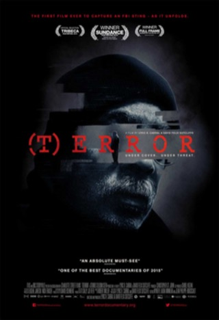

Panel · Double Exposure 2015
C#ns*rsh!p by Proxy
Friday, October 2, 2015 · 9:30 AM–11:00 AM · Newseum, Knight Conference Center, Room A
It’s not only government action that can block public access to investigative reporting. Pre-publication smear campaigns, insurance issues, and the mere threat of litigation – whether realized or not – have sometimes sufficed to keep important stories away from the public eye. Hear about first-hand experiences and learn how to anticipate--and sometimes avert--potential minefields.
Films discussed

(T)ERRORLyric Cabral, David Felix Sutcliffe2015 · 93 min